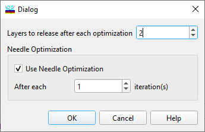

Sensitivity-Directed Refinement
Sensitivity-Directed Refinement
Navigation: OptiLayer Menu Commands > Synthesis Menu >
Sensitivity-Directed Refinement
` <formula_constrained_form.html>`__ ` <idh_menu_synthesis.html>`__ ` <idh_needle_optimization.html>`__
Sensitivity-directed refinement should be used in situations where a good initial guess about desired solutions is available, or when it is desirable to preserve the design structure suitable for production as much as possible. Therefore, it is important to have a reasonably good starting design for this option. The sensitivity-directed refinement algorithm works as follows: Initially, all design layers have a fixed status. At each iteration, it computes the layer sensitivities of all design layers and releases a given number of the most sensitive layers. After this, the design is refined and optionally a needle iteration is also performed. This process is repeated until all layers of the design are released. Due to this algorithm organization, the maximum decrease of the merit function is achieved already in the first iteration with a small number of active layers. In most cases, it preserves the initial structure of the design.

Sensitivity-Directed Refinement Setup dialog allows you to specify the parameters of this algorithm. It is possible to change the number of layers released at each iteration. Additionally, you can activate or deactivate the application of Needle Optimization (Use Needle Optimization checkbox) and specify how often the Needle Optimization step should be used (After each xxx iteration(s)).